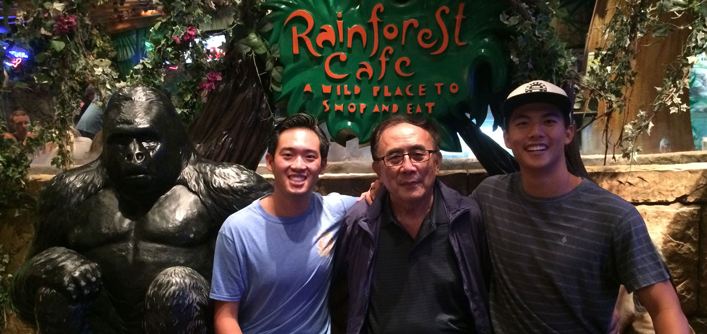

Agong in the USA 2017
Agong and Charles came from Taiwan to visit the United States. They mostly came because Agong wanted Charles to stay with mom and experience the US for a summer. It was very nice being able to show Agong our lives. We showed him my swim coaching job, Downtown Disney, and my summer internship location with Northwestern Mutual. Overall, it was a memory for the books considering it would be the last time Agong came to visit us in the USA.